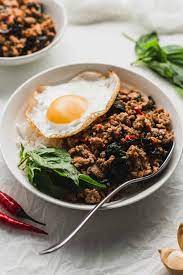

Pad Krapow Gai

Description
A common Thai stirfry consisting of Thai holy basil and chicken.
Recipe source: Allrecipes
Ingredients
- 1/3 cup chicken broth
- 1 tablespoon oyster sauce
- 1 tablespoon soy sauce
- 2 teaspoons fish sauce
- 1 teaspoon white sugar
- 1 teaspoon brown sugar
- 2 tablespoons vegetable oil
- 1 pound skinless boneless chicken thighs, coarsely chopped
- 1/4 cup sliced shallots
- 4 cloves garlic, minced
- 2 tablespoons minced Thai chilies
- 1 cup very thinly sliced Thai holy basil leaves
- 2 cups hot cooked rice
Steps
- Whisk chicken broth, oyster sauce, soy sauce, fish sauce, white sugar, and brown sugar together in a bowl until well blended.
- Heat skillet over high heat. Add oil. Add chicken and stir fry until it loses its raw color, 2 to 3 minutes. Stir in shallots, garlic, and sliced chilies. Cook on high heat until some of the juices start to caramelize in bottom of pan, about 2 or 3 more minutes. Add about a tablespoon of the sauce mixture to skillet; cook and stir until sauce begins to caramelize, about 1 minute.
- Pour in rest of sauce. Cook and stir until sauce has deglazed bottom of the pan. Continue cooking until sauce glazes onto meat, 1 or 2 more minutes. Remove from heat.
- Stir in basil. Cook and stir until basil is wilted, about 30 seconds. Serve with rice.